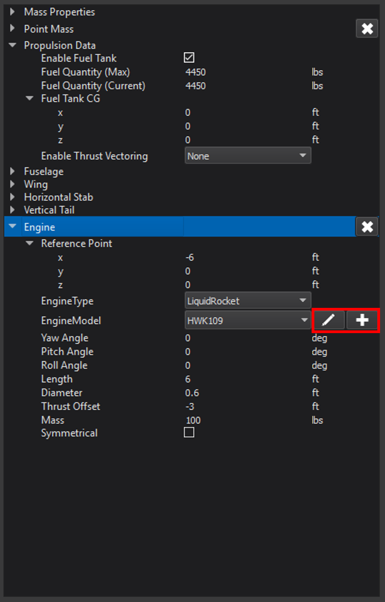
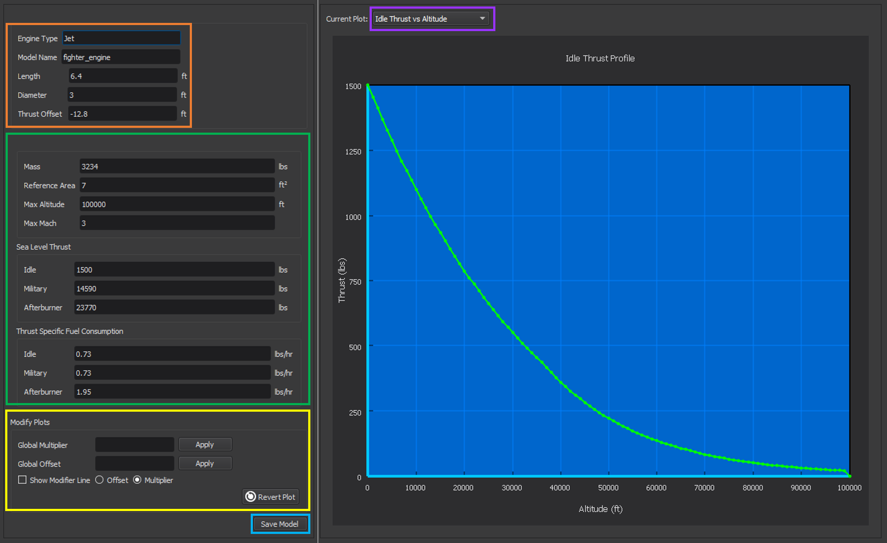
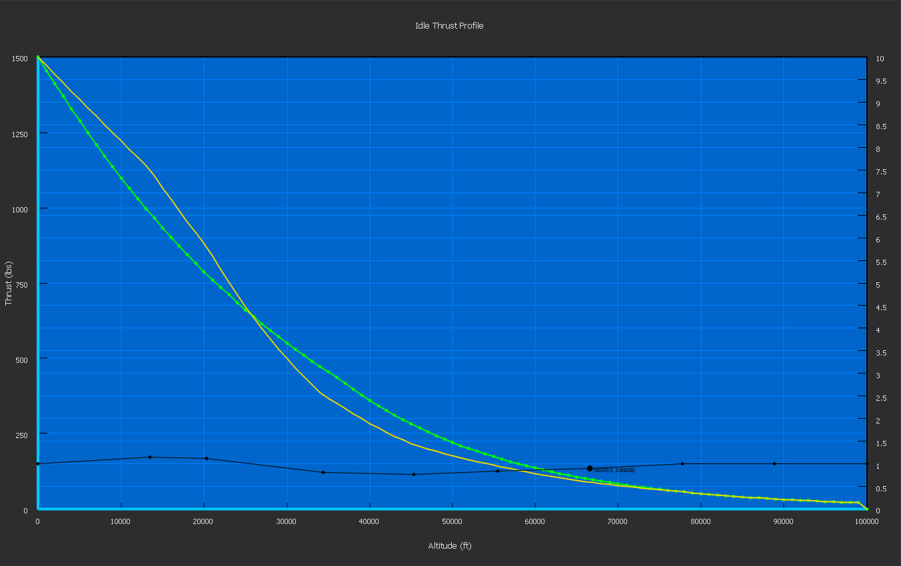
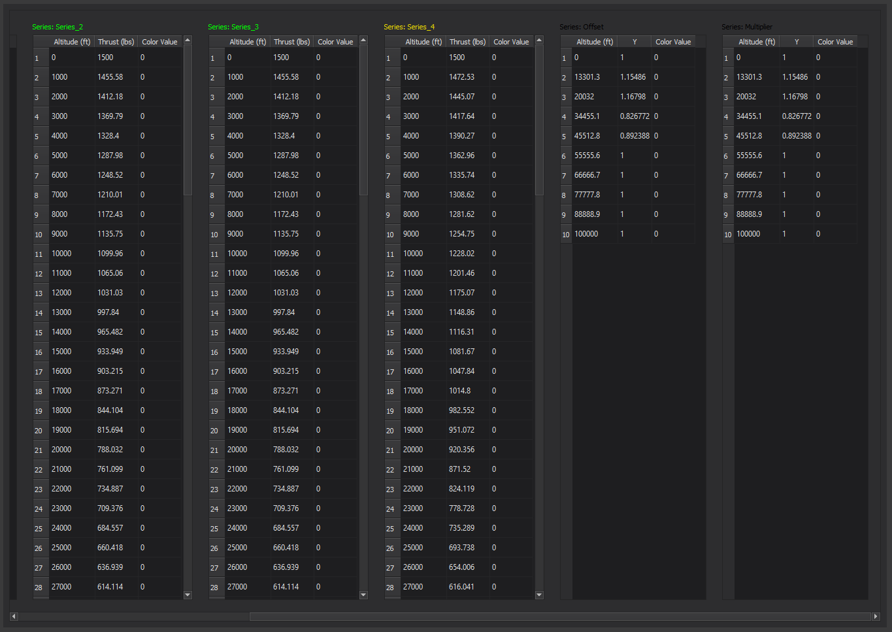
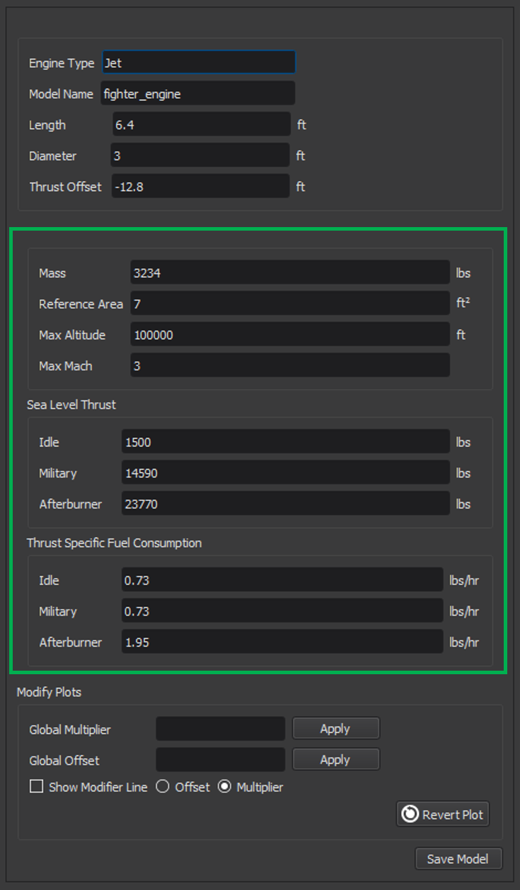
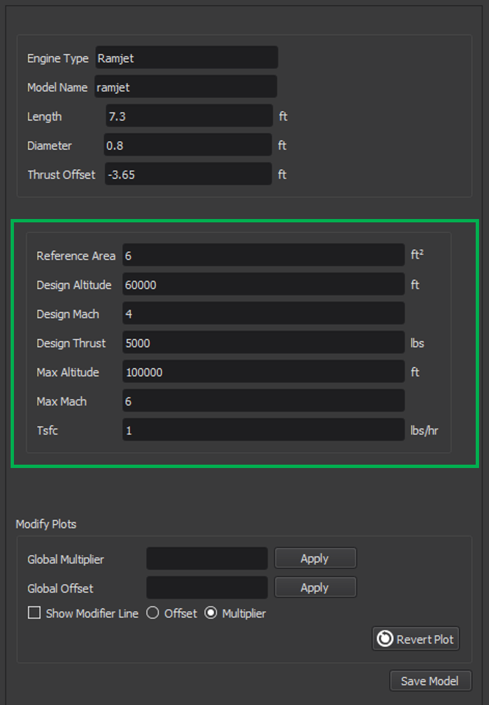
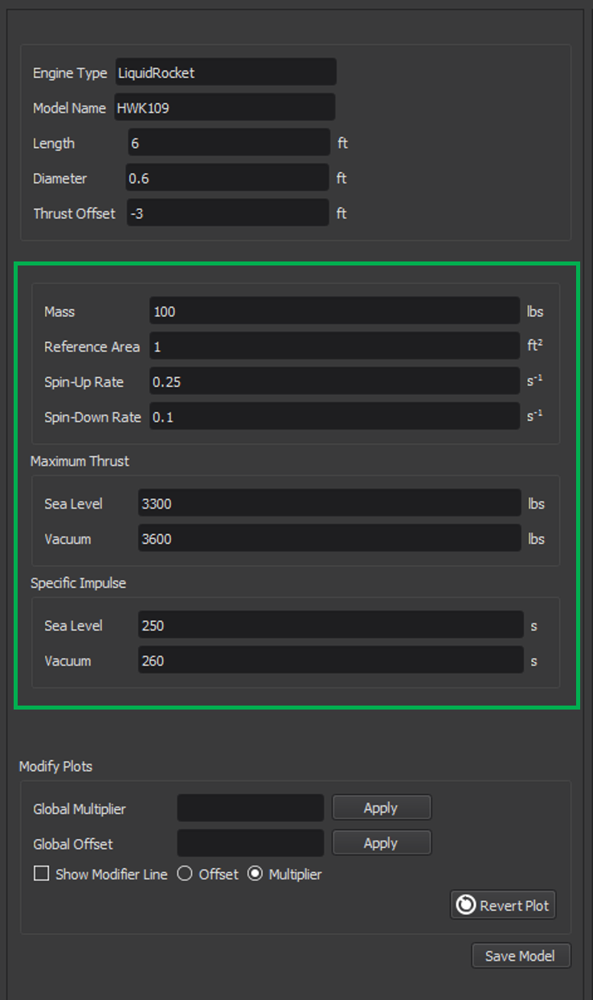
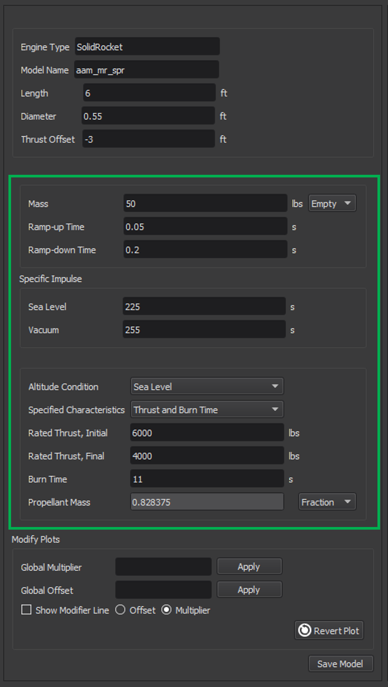

Engine Designer¶
{kind=link}
The Engine Designer opens when a user creates a new engine model or edits an existing model from the Start Dialog.
This tool allows the user to define the engine(s) that will be used for his or her vehicle. Once an engine is created, it becomes available in the drop-down menu when adding/editing an engine in the Geometry page. The Engine Designer may also be launched from this area (boxed in red in the image below).
The format of the Engine Designer is unique to each engine type, because each type requires a different set of specifications from the user.
Supported types include:
General¶
The Engine Designer has two main areas of interaction: an engine specification editor and a plot editor. Both are unique for each engine type, but share common features. This section will explain the general behavior and commonality of the two editors. Any changes made to the engine using either editor should be saved by clicking the “Save Model” button at the bottom of the left side of the dialog, shown in the image below (boxed in blue).
Engine Specifications¶
The left side of the screen contains a set of editable properties unique to the engine type being designed.
The specifications common to all of the engine types are listed in the table below. This group of specifications is boxed in orange in the image above with the exception of mass, which is grouped with each engine type’s parameters.
General Engine Properties |
|
|---|---|
Specification |
Description |
Engine Type |
The engine type currently being created or edited. (Read-only) |
Model Name |
The engine model currently being created or edited. (Read-only) |
Mass |
The mass of the engine. For solid rocket engines, options are provided for specifying the empty (casing) weight or the total mass including propellant. For all other engine types, the empty mass should be specified. |
Length |
The length of the engine in feet. |
Diameter |
The diameter of the engine in feet. |
The location of the thrust relative to the engine’s reference point along the x-axis in feet. A positive value is forward of the engine, negative is aft. |
In addition to the specifications in the table above, each engine type has its own unique set of specifications (boxed in green). The contents of this section will change according to the engine type. The specifications for each type are explained in their respective sections below.
Engine Plots¶
On the right side of the Engine Designer window is the plot editor. The displayed plot may be changed by selecting the desired plot from the “Current Plot” drop-down menu (shown in the image above, boxed in purple). Plots update as the user changes the properties in the engine specification editor (left side).
A plot may also be modified by using the tools in the “Modify Plots” section, boxed in yellow above. Users may enter a global multiplier that will multiply the y-coordinate of all points in the plot by the specified factor. Alternatively, users may enter a global offset that will move the y-coordinate of all points in the plot by the specified amount. Once the Apply button is clicked, a new line will appear showing the modified plot data. The modified plot line is colored yellow, and the original plot line is green. If the user wishes to have more control over the shape of the plot, he or she may check the option for “Show Modifier Line”. This will cause a black horizontal line to appear, the scale for which is on the right side of the plot area. Moving the individual points on this line to different values will cause the plot data to be moved by the corresponding amount. The modifier line can be toggled between “Offset” and “Multiplier”. Additional points may be added to the modifier line by right clicking anywhere on the plot area and selecting “Add Modifier Point” from the menu. A dialog will appear prompting the user for the desired x-coordinate of the new point.
If the user has a set of engine data he or she wishes to use, the engine’s raw .amc file may be modified to reflect the desired data. This file is in the JSON format. All of the engine’s plot data is under “plots” in the file.
Note
The engine .amc file is structured in a specific format, and should only be modified by advanced users.
To undo changes to the plot, click “Revert Plot”, located in the lower right corner of the “Modify Plots” section. This will remove all modifications done to the current plot and restore the plot as it was before the Engine Designer was launched.
{kind=link}
The plot view may be changed to a data view by right-clicking on the plot area and selecting “Data View”. Once in the data view, the user may go back to plot view by right clicking and selecting “Plot View” from the menu. The data may also be exported to .csv by right-clicking and selecting “Export Data”. The image below shows the data view of the plot shown above.
{kind=link}
Jets¶
Engine Specifications¶
{kind=link}
In addition to the engine properties in the General Engine Specifications Table, the user may specify properties unique to jet engines. These are summarized in the table below.
Jet Engine Properties |
|
|---|---|
Specification |
Description |
Mass |
The empty mass of the engine, in lbs. |
The aerodynamic CD-area product for the engine when it is inoperative, in square feet. |
|
Max Altitude |
The maximum operating altitude for this engine, in feet. Thrust is zero beyond this altitude |
Max Mach |
The maximum operating Mach number for this engine. Thrust is zero beyond this Mach. |
Sea Level Thrust, Idle |
Rated sea-level thrust at idle, in lbs. |
Sea Level Thrust, Military |
Rated sea-level thrust at full military power without afterburner, in lbs. |
Sea Level Thrust, Afterburner |
Rated sea-level thrust at full afterburner, in lbs. |
Thrust specific fuel consumption at idle, in lbs-fuel/(lbs-thrust/hr). |
|
Thrust specific fuel consumption at full military power without afterburner, in lbs-fuel/(lbs-thrust/hr). |
|
Thrust specific fuel consumption at full afterburner, in lbs-fuel/(lbs-thrust/hr). |
Engine Plots¶
Available plots for jet engines are shown in the table below.
Jet Engine Plots |
|
|---|---|
Plot Name |
Description |
Idle Thrust vs Altitude |
Idle thrust (in lbs) versus altitude (in feet) at Mach 0. This is the altitude dimension of the table given by thrust_idle_mach_alt_table. |
Military Thrust vs Altitude |
Military thrust (in lbs) versus altitude (in feet) at Mach 0. This is the altitude dimension of the table given by thrust_mil_mach_alt_table. |
Afterburner Thrust vs Altitude |
Afterburner thrust (in lbs) versus altitude (in feet) at Mach 0. This is the altitude dimension of the table given by thrust_ab_mach_alt_table. |
Idle Thrust vs Mach |
Idle thrust (in lbs) versus Mach at sea level. This is the Mach dimension of the table given by thrust_idle_mach_alt_table. |
Military Thrust vs Mach |
Military thrust (in lbs) versus Mach at sea level. This is the Mach dimension of the table given by thrust_mil_mach_alt_table. |
Afterburner Thrust vs Mach |
Afterburner thrust (in lbs) versus Mach at sea level. This is the Mach dimension of the table given by thrust_ab_mach_alt_table. |
Military Spin-Up Rate |
Idle to military spin-up rate (in percent throttle per second) versus percent throttle. Equivalent to spin_up_table_mil_per_sec. |
Afterburner Spin-Up Rate |
Military to afterburner spin-up rate (in percent throttle per second) versus percent throttle. Equivalent to spin_up_table_ab_per_sec. |
Military Spin-Down Rate |
Military to idle spin-down rate (in percent throttle per second) versus percent throttle. Equivalent to spin_down_table_mil_per_sec. |
Afterburner Spin-Down Rate |
Afterburner to Military spin-down rate (in percent throttle per second) versus percent throttle. Equivalent to spin_down_table_ab_per_sec. |
Ramjets¶
Engine Specifications¶
{kind=link}
In addition to the engine properties in the General Engine Specifications Table, the user may specify properties unique to ramjets. These are summarized in the table below.
Ramjet Engine Properties |
|
|---|---|
Specification |
Description |
Mass |
The empty mass of the engine, in lbs. |
The aerodynamic CD-area product for the engine when it is inoperative, in square feet. |
|
Design Altitude |
The altitude, in feet, at which the produced thrust is equal to the design thrust. |
Design Mach |
The Mach number at which the produced thrust is equal to the design thrust. |
Design Thrust |
The thrust, in lbs, produced at the design altitude and the design Mach |
Max Altitude |
The maximum operating altitude for this engine, in feet. Thrust is zero beyond this altitude |
Max Mach |
The maximum operating Mach number for this engine. Thrust is zero beyond this Mach. |
Tsfc |
Thrust Specific Fuel Consumption, in lbs-fuel/(lbs-thrust/hr). Used to generate tsfc_alt_mach_table. It is assumed that the thrust specific fuel consumption is constant with respect to Mach. |
Engine Plots¶
Available plots for ramjet engines are shown in the table below.
Ramjet Engine Plots |
|
|---|---|
Plot Name |
Description |
Thrust vs Altitude |
Thrust (in lbs) versus altitude at the design Mach. |
Thrust vs Mach |
Thrust (in lbs) versus Mach at the design altitude. |
Liquid Propellant Rockets¶
Engine Specifications¶
{kind=link}
In addition to the engine properties in the General Engine Specifications Table, the user may specify properties unique to liquid propellant engines. These are summarized in the table below.
Liquid Propellant Engine Properties |
|
|---|---|
Specification |
Description |
Mass |
The empty mass of the engine, in lbs. |
The aerodynamic CD-area product for the engine when it is inoperative, in square feet. |
|
The spin-up rate in normalized-position/sec. A value of 1.0 implies that the engine will spin-up from zero to full thrust in 1 second, while a value of 0.1 implies that it will take 10 seconds to spin-up from zero to full thrust. |
|
The spin-down rate in normalized-position/sec. A value of 1.0 implies that the engine will spin-down from full thrust to zero thrust in 1 second, while a value of 0.1 implies that it will take 10 seconds to spin-down from full thrust to zero thrust. |
|
The maximum thrust than can be produced at sea level conditions, in lbs. |
|
Maximum Thrust, Vacuum |
The maximum thrust than can be produced at vacuum conditions, in lbs. Used to define the table given by normalized_thrust_vs_alt |
Specific Impulse, Sea Level |
The specific impulse at sea level, in seconds. Used to define the table given by isp_vs_alt. |
Specific Impulse, Vacuum |
The specific impulse at vacuum conditions, in seconds. Used to define the table given by isp_vs_alt. |
Engine Plots¶
Available plots for liquid propellant engines are shown in the table below.
Liquid Propellant Engine Plots |
|
|---|---|
Plot Name |
Description |
Specific Impulse vs Altitude |
Specific impulse (in seconds) versus altitude. Equivalent to isp_vs_alt. |
Thrust vs Altitude |
Thrust (in lbs) versus altitude. Equivalent to the maximum sea level thrust multiplied by normalized_thrust_vs_alt. |
Solid Propellant Rockets¶
Engine Specifications¶
{kind=link}
In addition to the engine properties in the General Engine Specifications Table, the user may specify properties unique to solid propellant engines. These are summarized in the table below.
Solid Propellant Engine Properties |
|
|---|---|
Specification |
Description |
Mass |
The mass of the engine, in lbs. Either the casing mass or the total mass (including propellant) can be specified. |
Ramp-up Time |
The time it takes for the engine to go from zero thrust to its initial rated thrust, in seconds. Used to create the table given by thrust_vs_time_sealevel or thrust_vs_time_vacuum. |
Ramp-down Time |
The time it take for the engine to go from its final rated thrust to zero thrust, in seconds. Used to create the table given by thrust_vs_time_sealevel or thrust_vs_time_vacuum. |
Specific Impulse, Sea Level |
The specific impulse at sea level, in seconds. Used to compute the table given by isp_vs_alt. |
Specific Impulse, Vacuum |
The specific impulse at vacuum conditions, in seconds. Used to compute the table given by isp_vs_alt. |
Altitude Condition |
The altitude condition (sea level or vacuum) at which the propulsion data is computed. |
Specified Characteristics |
The two properties that the user specifies out of the three properties: thrust, burn time, and propellant mass. |
Rated Thrust, Initial |
The rated thrust after the initial ramp-up, in lbs. |
Rated Thrust, Final |
The rated thrust just before ramp-down begins, in lbs. |
Burn Time |
The total time (including ramp-up and ramp-down) for which the propellant burns, in seconds. |
The mass of the propellant. The mass may be specified either in lbs or as a mass fraction. |
Engine Plots¶
Available plots for solid propellant engines are shown in the table below.
Solid Propellant Engine Plots |
|
|---|---|
Plot Name |
Description |
Thrust vs Time |
Thrust (in lbs) versus time (in seconds). It is assumed that the thrust is zero at T = 0 and T = burn time. |
Specific Impulse vs Altitude |
Specific impulse (in seconds) versus altitude. Equivalent to isp_vs_alt. |